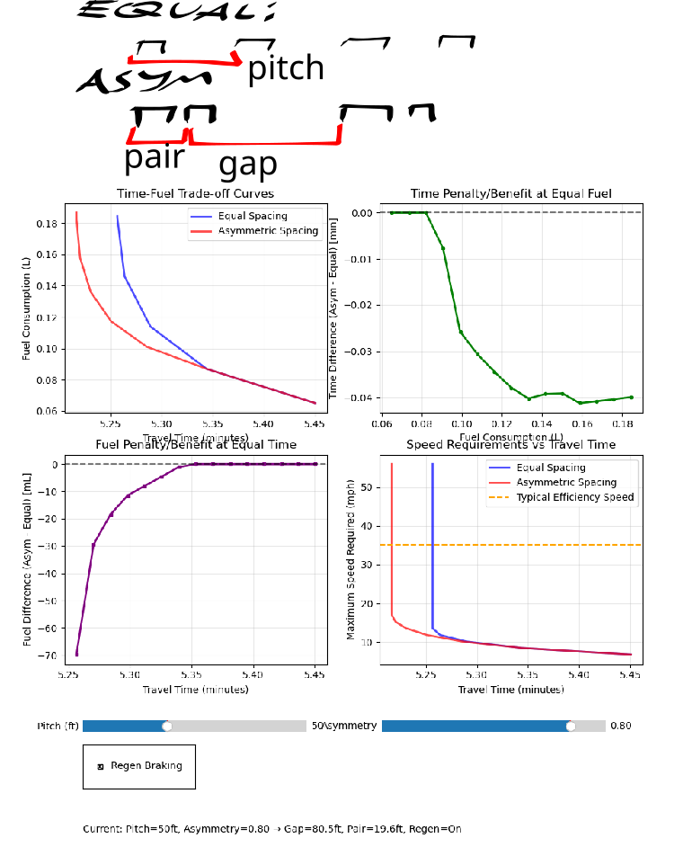

This model suggests that bit of fuel or time can be saved by putting waste bins on alternating sides of the driveways. Running the model produces something like:
Put garbage/recycling on the side of the neighbor you like more.
Renumber your side of the street 1,2,3,..., if you're odd garbage goes on the left otherwise it goes on the right.
k+1,k+2,k+3.. sequence could be found by dividing the current house numbers by 2GCD, though
The drivers put a red/green sticker on the bin, where the text/hyperlink/qr code explains how the convention is exactly the same as navigation buoys (red right return).